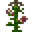

1.20.1 / The World / Wild Crops

Wild Crops can be found scattered around the world, growing in small patches. They can be harvested for food and seeds, which can then be cultivated themselves in the not-wild form.
Harvesting wild crops can be done with your fists, or with a Knife or other sharp tool. When broken, they will drop Seeds and some Products.
Multiblock
An example of a wild crop, in this case Wheat.
Every crop that can be cultivated can also be found in the wild. Wild crops will look similar to their cultivated counterparts, but are more hidden within the grass. Wild crops are only mature from June to October. Otherwise, they appear dead until the next Summer.
Multiblock
All different varieties of wild crop
Wild crops will spawn in climates near where the crop itself can be cultivated, so if looking for a specific crop, look in the climate where the crop can be cultivated. However, unlike Crops that the player has planted, wild crops do not require Hydration. Instead, they are found in areas depending on the average Temperature and Rainfall.
The next pages show a table of the environments where wild crops can be found.
Crop | Temperature (°C) | Rainfall (mm) |
|---|---|---|
Barley | -8 - 26 | 70 - 310 |
Oat | 3 - 40 | 140 - 400 |
Rye | -11 - 30 | 100 - 350 |
Maize | 13 - 40 | 300 - 500 |
Wheat | -4 - 35 | 100 - 400 |
Rice | 15 - 30 | 100 - 500 |
Beet | -5 - 20 | 70 - 300 |
Cabbage | -10 - 27 | 60 - 280 |
Carrot | 3 - 30 | 100 - 400 |
Garlic | -20 - 18 | 60 - 310 |
Green Bean | 2 - 35 | 150 - 410 |
Melon | 5 - 37 | 200 - 500 |
Crop | Temperature (°C) | Rainfall (mm) |
|---|---|---|
Potato | -1 - 37 | 200 - 410 |
Pumpkin | 0 - 30 | 120 - 390 |
Onion | 0 - 30 | 100 - 390 |
Soybean | 8 - 30 | 160 - 410 |
Squash | 5 - 33 | 90 - 390 |
Sugarcane | 12 - 38 | 160 - 500 |
Tomato | 0 - 36 | 120 - 390 |
Jute | 5 - 37 | 100 - 410 |
Papyrus | 19 - 37 | 310 - 500 |
Red Bell Pepper | 16 - 30 | 190 - 400 |
Yellow Bell Pepper | 16 - 30 | 190 - 400 |